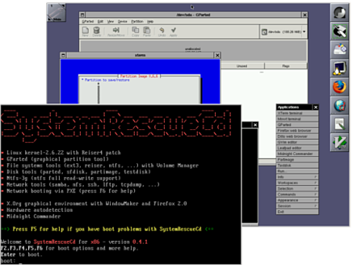

SystemRescueCD
Artikel für fortgeschrittene Anwender
Dieser Artikel erfordert mehr Erfahrung im Umgang mit Linux und ist daher nur für fortgeschrittene Benutzer gedacht.
Zum Verständnis dieses Artikels sind folgende Seiten hilfreich:
SystemRescueCd  ist ein Gentoo Linux-System mit Datensicherungs- und Datenrettungsprogrammen sowie verschiedenen Systemwerkzeugen auf einer bootfähigen CD oder einem USB-Stick.
ist ein Gentoo Linux-System mit Datensicherungs- und Datenrettungsprogrammen sowie verschiedenen Systemwerkzeugen auf einer bootfähigen CD oder einem USB-Stick.
Das System unterstützt in der aktuellen Version mit einem 2.6-29-Kernel auch AMD64 und x86-64Bit Architekturen und steht unter der GPL2 (GNU General Public License Version 2). Das kompakte System ist auch gut für ältere Rechner geeignet, da die aktuelle Knoppix Live-CD stärker auf aktuelle Hardware ausgerichtet ist, sich dadurch auch Startschwierigkeiten ergeben können und für den hier angestrebten Verwendungszweck zu viele Programme als Ballast mitbringt. Die Programme können nach dem Systemstart über die Konsole oder zum Teil auch komfortabel über die grafische Benutzeroberfläche gestartet werden.
Die Möglichkeit eine Systemsicherung oder Wartungs- und Reparaturarbeiten durchzuführen, bieten auch andere Live-Systeme. Weitere umfassende Informationen zum Thema Sicherheit und Datensicherung sind im Wiki zu finden.
Enthaltene Programmpakete¶
Die wichtigsten Programme im Überblick
Festplattenverwaltung:
GParted - Verwalten von Partitionen 
GNU Parted - Verwalten von Partitionen (Konsole)
Systemsicherung:
partimage - sichern und wiederherstellen ganzer Partitionen
Dateisysteme/Werkzeuge:
e2fsprogs - ext2/ext3 und ab Version 1.2* auch ext4 Dateisysteme / Hilfprogramme
reiserfsprogs - reiser-Dateisystem Hilfsprogramme
reiser4progs - reiser4-Dateisystem Hilfsprogramme
xfsprogs - xfs-Dateisystem Hilfsprogramme
jfsutils - jfs-Dateisystem Hilfsprogramme
ntfsprogs - ntfs-Dateisystem Hilfsprogramme (bei neueren ntfs-3g Versionen bereits integriert, ca. ab 07/11)
dosfstools - DOS-Dateisystem Hilfsprogramme
ntfs-3g - Unterstützung für NTFS-Partitionen
Sfdisk
 - Partitionstabellen sichern und wiederherstellen
- Partitionstabellen sichern und wiederherstellen
Netzwerk:
nslookup
- DNS-Server Hilfsprogramm Samba - Zugang zu Windows-Netzwerken
NFS - Protokoll zum Dateiaustausch über das lokale Netzwerk
ping
- Datenübertragung im Netzwerk testen
Weitere Anwendungen sind Firefox und Dillo (Webbrowser), Midnight-Commander (Dateimanager), der ClamAV-Virenscanner und diverse Editoren für die Konsole bzw. die grafische Oberfläche.
Eine Übersicht der wichtigsten Programme kann auch auf der Projektseite eingesehen werden.
Start-CD erstellen¶
Auf der Downloadseite  kann man sich das ISO-Abbild des Systems herunterladen und anschließend mit einem Brennprogramm eine startfähige CD erzeugen.
kann man sich das ISO-Abbild des Systems herunterladen und anschließend mit einem Brennprogramm eine startfähige CD erzeugen.
Installation auf USB-Stick¶
Eine Anleitung für die aktuelle Version 1.2* ist auf der Projektseite zu finden.
Folgende Pakete müssen installiert [1] werden um den USB-Stick startfähig (bootable) zu machen:
syslinux
mtools
Da das ganze System inclusive aller enthaltenen Programme nur etwa 180MB an Speicherplatz benötigt (Version 3.1.1, Dez. 2012: 350MB), genügt bereits ein 256MB großer Speicherstick. Die Installation bietet zudem den Vorteil noch eigene Programme oder Scripte hinzufügen sowie Systemeinstellungen abspeichern zu können. Siehe dazu auch die Dokumentation auf der Projektseite.
Der Speicherstick sollte leer und mit FAT16-Dateisystem formatiert sein. Das lässt sich falls erforderlich unter Gnome mit GParted schnell erledigen. Danach muss der Stick noch einmal entfernt und erneut am Rechner angeschlossen werden, damit der Stick vom System als Laufwerk einbunden wird.
Danach wird über ein Terminal [2] folgender Befehl ausgeführt (ggf. mit sudo), wobei sdx* der vorab formatierte USB-Stick sein sollte, und je nach System sdx1, sdx2 usw. (oder sdb1, ...) sein kann.
syslinux -f /dev/sdx*
Damit wird jetzt ein kleines Startprogramm auf dem Stick installiert. Das vorab gespeicherte ISO-Abbild kann jetzt einfach mit einem Archivmanager [3] geöffnet werden.
Alle Dateien müssen ohne Unterverzeichnisse einfach auf den USB-Stick kopiert werden. Dazu muss im verwendeten Archivmanager die Option "Alle Dateien" aktiviert und "Ordner neu anlegen" deaktiviert werden. Als Ziel wird bei "in Ordner entpacken" der USB-Stick angegeben. Damit wird sichergestellt, dass alle Dateien, auch aus den Unterverzeichnissen des ISO-Abbildes, direkt in das Hauptverzeichnis des USB-Sticks kopiert werden.
Sind alle Dateien ohne Fehlermeldung entpackt und kopiert, ist die Installation abgeschlossen. Alternativ können die Dateien auch direkt von der aus dem ISO-Image erzeugten CD kopiert werden.
System starten¶
Boot-CD einlegen oder USB-Stick anschließen. Rechner neu starten.
Je nach verwendetem Medium , CD oder USB-Stick, muss im BIOS des Rechners noch die Bootreihenfolge eingestellt werden.
Nachdem das System von CD oder USB-Stick gestartet ist findet man sich im Anfangsbildschirm wieder, und kann über die Funktionstasten Hilfe zu speziellen Startoptionen bekommen oder direkt mit der Eingabetaste die Startsequenz aktivieren. Im laufe des Startvorgangs wird man noch einmal aufgefordert das Tastaturlayout festzulegen. Für eine deutsche Tastatur mit Umlauten wird Nr.10 ausgewählt.
Wurde das System vollständig geladen, befindet man sich in der Eingabekonsole und kann direkt verschiedene Programme, wie z.B. partimage aufrufen.
Mit diesem Befehl wird die grafische Benutzeroberfläche gestartet:
startx
Auf der Oberfläche sind bereits einige Startverknüpfungen angelgt. Durch einen Klick mit der rechten Maustaste auf den Desktop erhält man Zugriff auf das System- und Programmenü.
Startoptionen¶
Die Tasten F1 bis F6 am Boot-Prompt zeigen eine Übersicht der möglichen Befehle.
Syntax: [Kernelversion] [Option] [Option] ...
Beispiel: rescuecd net-setup dodhcp setkmap=de
Kernelversionen:
rescuecd standard 32bit-Kernel (Voreinstellung)
vmlinuz2 alternativer 32bit-Kernel (bei Startproblemen)
rescue64 standard 64bit-Kernel
Netzwerk und Werkzeuge:
net-setup initialisiert eine Ethernet-Schnittstelle (z.B. net-setup eth0)
dodhcp DHCP-Client wird gestartet (in Verbindung mit net-setup verwenden)
Start-Parameter:
docache es werden alle Systemdateien in den Hauptspeicher (RAM) kopiert. Die Start-CD oder USB-Stick kann nach dem Bootvorgang entfernt werden. Dafür sind mindestens 300MB Hauptspeicher erforderlich.
setkmap=de es wird direkt das deutsche Tastaturlayout geladen. Die Abfrage entfällt.
ide=nodma DMA-Modus für Festplattenlaufwerke wird deaktiviert
all-generic-ide Alternative bei Problemen mit der Festplattenerkennung oder falls das System beim Bootvorgang "hängt"
forcevesa
lädt den VESA-Treiber für die Grafikkarte beim Start des xSystems doxdetect bei Problemen mit dem xSystem
acpi-off
erweitete Energieverwaltung ausgeschaltet. noapic
Steuerung der Interruptverteilung ausgeschaltet. irqpool alternative Interruptsteuerung für Geräteerkennung.
Disketten-Images¶
Direkt nach dem Start können einige Programme über enthaltene Disketten-Images gestartet werden. Hilfe mit Taste F2 :
memtest testet den Hauptspeicher (RAM) des Systems.
ntpass Editiert oder setzt Windows Passwörter auf NTFS-Partitionen zurück.
freedos
Erlaubt das Starten von DOS-Programmen. gag Startet einen grafischen Bootmanager.
ranish Startet einen Partitionsmanager Projektseite
aida DOS Hardware Diagnose-Werkzeug.
disk* Startet das System von der angegebenen Festplatte.
floppy Startet das System über das Disketenlaufwerk.
dban
Mini Linux-Distribution. Löscht Daten sicher und vollständig.
Siehe auch die Beschreibung auf der Projektseite.
Laufwerke einbinden¶
Damit z.B. eine Datensicherung mit partimage möglich ist muss ein Laufwerk eingehängt werden (mount). Dazu wird zuerst ein Einhängepunkt (Mountpoint), also ein Verzeichnis, z.B. backup mit folgendem Befehl unter /mnt erstellt:
mkdir /mnt/backup
Einen Überblick über die vom System erkannten Laufwerke erhält man durch folgende Befehle mit GNU Parted. Die Nummer der angezeigten Partitionen entspricht den Systemlaufwerken sdx*
parted print all quit
Anschließend kann das Laufwerk auf dem die Daten abgelegt werden sollen eingehängt (gemounted) werden, wobei sdx* dem Ziellaufwerk entspricht. Das zu sichernde Laufwerk (Quelldatenträger) darf nicht eingebunden werden.
mount /dev/sdx* /mnt/backup
Unter partimage kann dann als Zielverzeichnis /mnt/backup/Name_der Sicherungsdatei.gz angegeben werden. Die Daten werden nun auf das vorab eingebundene Ziellaufwerk sdx* geschrieben.
- Erstellt mit Inyoka
-
 2004 – 2017 ubuntuusers.de • Einige Rechte vorbehalten
2004 – 2017 ubuntuusers.de • Einige Rechte vorbehalten
Lizenz • Kontakt • Datenschutz • Impressum • Serverstatus -
Serverhousing gespendet von